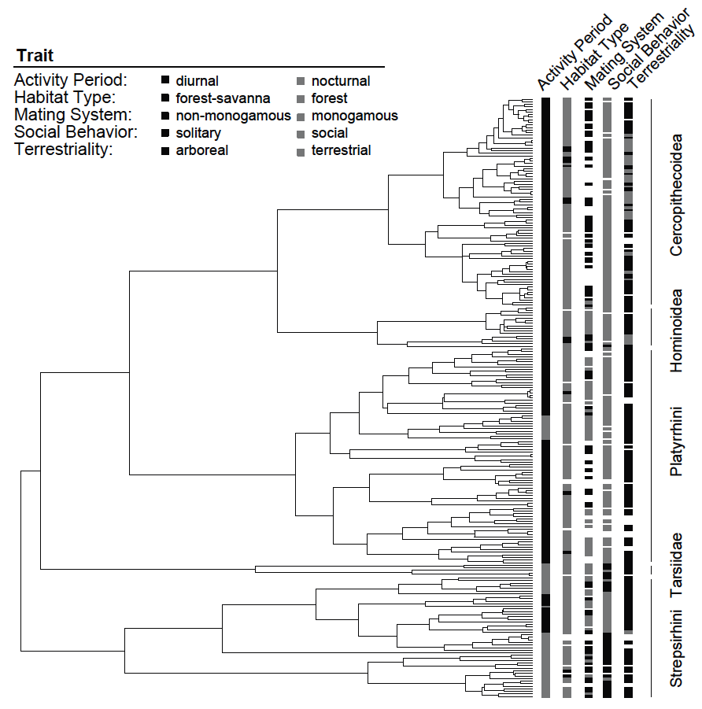

Discrete morphological models are not only useful for tree estimation, as was done in Tutorial Discrete morphology - Tree Inference, but also to ask specific questions about the evolution of the morphological character of interest. Specifically, there are a few types of analyses that we might be interest in. First, we can test different models of morphological evolution, such as reversible and irreversible models, and estimate rates under these models. For example, using an irreversible model of evolution, we can test, for example, for Dollo’s law of a complex character that can be lost but not gained again (Goldberg and Igić 2008).
Additionally, we might be interest in ancestral state estimation, or mapping transition on the phylogeny. Commonly the central problem in statistical phylogenetics concerns marginalizing over all unobserved character histories that evolved along the branches of a given phylogenetic tree according to some model, $M$, under some parameters, $\theta$. This marginalization yields the probability of observing the tip states, $X_\text{tip}$, given the model and its parameters, $P( X_\text{tip} | \theta, M ) = \sum_{X_\text{internal}} P( X_\text{internal}, X_\text{tip} \mid \theta, M )$. One might also wish to find the probability distribution of ancestral state configurations that are consistent with the tip state distribution, $P( X_\text{internal} \mid X_\text{tip}, \theta, M )$, and to sample ancestral states from that distribution. This procedure is known as ancestral state estimation.
Finally, we might be interested in testing for correlated evolution between discrete morphological characters. For example,
This tutorial will provide a discussion of modeling morphological characters and ancestral state estimation, and will demonstrate how to perform such Bayesian phylogenetic analysis using RevBayes (Höhna et al. 2016).
Create a directory on your computer for this tutorial. In this directory, create a subdirectory called data, and download the data files that you can find on the left of this page.
We have taken the phylogeny from Magnuson-Ford and Otto (2012), who took it from Vos and Mooers (2006) and then randomly resolved the polytomies using the method of Kuhn et al. (2011) and the trait data from Redding et al. (2010). In the data folder, you should now have the following files:
0 = diurnal and 1 = nocturnal.0 = forest and 1 = savanna.0 = group living and 1 = solitary.0 = arboreal and 1 = terrestrial.0 = single male, 1 = single and multi male, and 2 = multi male.0 = monogamy, 1 = polygyny, 2 = polygynandry, and 3 = polyandry.0 = frugivore, 1 = insectivore, 2 = folivore, 3 = gummnivore, 4 = omnivore, and 5 = gramnivore.
For more complex models and analyses, it’s useful to create separate Rev scripts that contain all the model parameters, moves, and functions for different model components (e.g. the substitution model and the clock model).
Create another subdirectory called scripts.
In this tutorial, you will work primarily in your text editor and create a set of modular files that can be easily managed and interchanged. Examples of all the commands used to perform each analysis are also provided at the top of this page under Scripts but try to write the complete scripts yourself from the beginning to ensure you understand all the steps involved and the differences between setting up each analysis.
Click on the first exercise to begin!